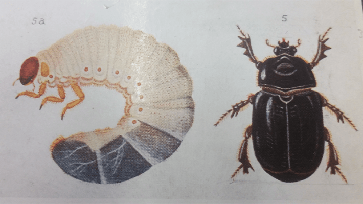

Daylight Savings Time is a hot button issue. Whether you love the futzing with the clocks or hate it, there is one historical figure who was a key proponent of the annual springing forward and falling back: George Hudson, an amateur entomologist in New Zealand hoping for a couple more hours of daylight to find and catch his insect quarry.
In the late 1800s, the preteen Hudson started a lifelong love affair with insects, particularly moths and butterflies, collecting specimens with his brother around their London home.
The Hudson family moved to New Zealand in 1881, and George got shift work as a cadet in the post office in Wellington in 1883. He continued collecting insects, and his fervent curation and illustration resulted in his first book, completed at age 19, in 1886. But meshing his work in the post office with his passion for entomology was vexing to Hudson. There simply didn’t seem to be enough hours in a day for both.
PARTY TIME: In 1907, Hudson (center row, left with vest and cap) was a member of the Auckland Islands Party, a scientific expedition to subantarctic islands off of New Zealand's South Island. He and his colleagues collected 61 species of insects there. Credit: Samuel Page / Wikimedia Commons.
So George Hudson proposed a radical idea: Set clocks back two hours during the summer so that sunlight would grace the land for a longer stretch of the workday. Hudson presented his idea to the Wellington Philosophical Society, first in a paper published as a brief abstract in 1895.
His plan to “alter the time of the clocks at the equinoxes so as to bring the working-hours of the day within the period of daylight, and by utilising the early morning, so reduce the excessive use of artificial light which at present prevails,” was met with ridicule by the Society. “Mr. Hudson’s original suggestions were wholly unscientific and impracticable,” wrote one Society member. “If he really had found many to support his views, they should unite and agitate for a reform.”
Read more: “How Darkness Can Illuminate the Insect Apocalypse”
Disappointed but undeterred, Hudson submitted his proposal at greater length to the Society in 1898. By that time others, around the world, were suggesting similar time shifts, and war-time England and Germany were the first to institute a single hour change in spring and fall in 1916, the need to conserve fuel trumping the desire to avoid the whole hassle. The United States adopted the change in 1918, and New Zealand in 1927.
While the world warmed to annual clock manipulation, Hudson continued to collect and paint insects. In total, he authored seven entomology books, designed to share the splendor of New Zealand’s insect denizens with the public.

KIWI BEETLES: Hudson drew this adult and larval stage of Pericoptus truncatus for the book New Zealand Beetles and their Larvae. Credit: Siobhan Leachman / Wikimedia Commons.
These days Daylight Savings Time is a contentious issue. Some U.S. states observe the twice-yearly clock changes, some don’t. Ditching Daylight Savings Time or sticking with it permanently is a perennial debate in legislatures from state to federal levels. Researchers have found various ills associated with practice. Last month, Stanford biologists suggested in a PNAS paper that shifting to Standard Time permanently “would lead to a decrease in the prevalence of stroke and obesity.” Sticking with Daylight Savings Time would have a similar, though less pronounced, effect, they added. But for better or worse, about 70 countries around the world still observe the changing of the clocks.
Side note: Hudson was also something of an astronomy buff, installing a four-inch telescope at his section of the post office in 1904 and watching the transit of Helly’s Comet in 1910 with rapt interest. He even discovered and named a star, Nova Aquilae, in 1918. I guess he did have a soft spot for darkness after all.
As we all drag our one-hour-more-rested carcasses from the bed next week, let’s spare a thought for old George Hudson. Unscientific. Impracticable. And ahead of his time. 
EnjoyingNautilus? Subscribe to our free newsletter.
Lead image: George Hudson / Wikimedia Commons